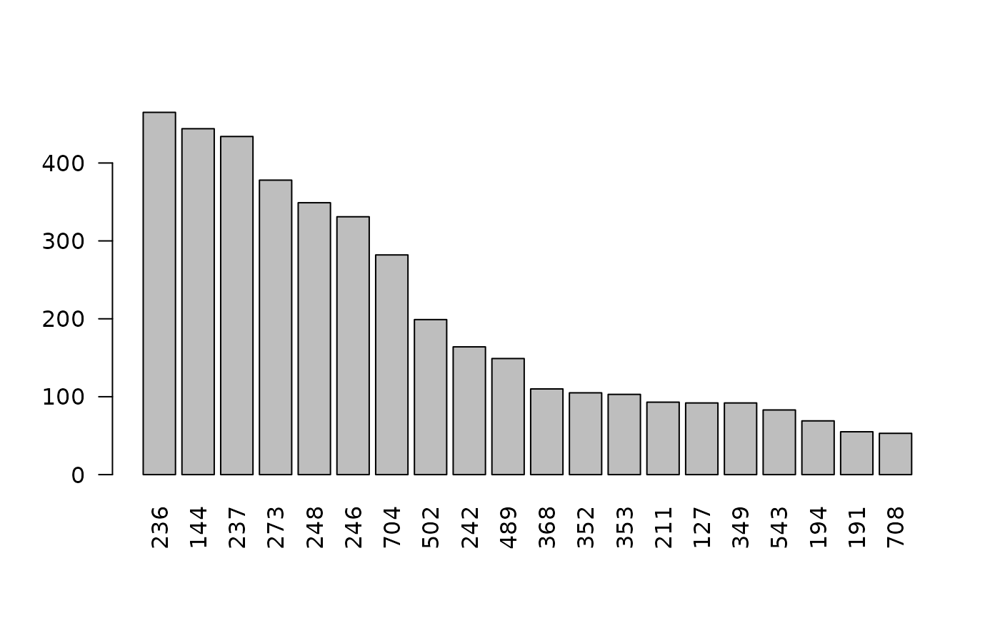
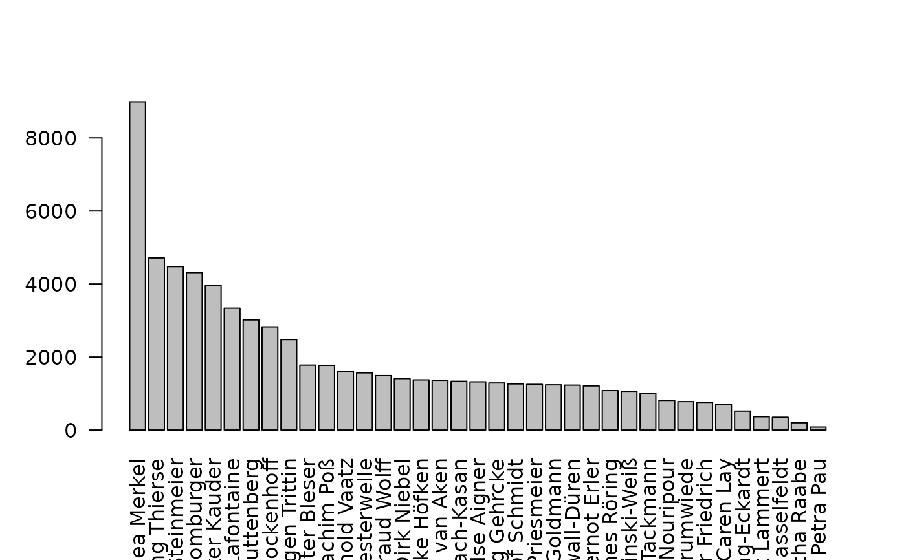

R/S4classes.R, R/partition_bundle.R, R/enrich.R, and 1 more
partition_bundle-class.RdClass and methods to manage bundles of partitions.
# S4 method for class 'partition_bundle'
show(object)
# S4 method for class 'partition_bundle'
summary(object, progress = FALSE)
# S4 method for class 'partition_bundle'
merge(x, name = "", verbose = FALSE)
# S4 method for class 'partition_bundle'
barplot(height, ...)
# S4 method for class 'list'
as.partition_bundle(.Object, ...)
# S4 method for class 'environment'
partition_bundle(.Object)
# S4 method for class 'partition_bundle'
enrich(.Object, p_attribute, decode = TRUE, verbose = FALSE)
# S4 method for class 'subcorpus_bundle'
enrich(.Object, p_attribute, decode = TRUE, verbose = FALSE)
flatten(object)A partition_bundle object.
A logical value, whether to show progress bar.
A partition_bundle object.
the name for the new partition
A logical value, whether to show progress messages.
height
further parameters
A partition_bundle object.
A character vector with p-attribute(s) for counting.
A logical value, whether to turn token ids into decoded
strings.
An object of the class 'partition. See partition for the details on the class.
a partition_bundle object
The merge-method aggregates several partitions into one partition. The
prerequisite for this function to work properly is that there are no
overlaps of the different partitions that are to be summarized.
Encodings and the root node need to be identical, too.
The enrich() method will fill the slot stat of the partition
objects within the bundle with a count for the designated p-attributes. If
.Object is a subcorpus_bundle, the output class will be a
partition_bundle.
objectsObject of class list the partitions making up the bundle
corpusObject of class character the CWB corpus the partition is based on
s_attributes_fixedObject of class list fixed s-attributes
encodingObject of class character encoding of the corpus
explanationObject of class character an explanation of the partition
xmlObject of class character whether the xml is flat or nested
callObject of class character the call that generated the partition_bundle
# merge partition_bundle into one partition
gparl <- corpus("GERMAPARLMINI") %>%
split(s_attribute = "date") %>%
merge()
#> ℹ s-attribute "date" has values: yes
#> ℹ get regions and get values
#> ✔ get regions and get values [7ms]
#>
#> ℹ instantiate objects (n = 5)
#> ✔ instantiate objects (n = 5) [9ms]
#>
#> ℹ assign names
#> ✔ assign names [6ms]
#>
use(pkg = "RcppCWB", corpus = "REUTERS")
#> ✔ corpus loaded: REUTERS
pb <- partition_bundle("REUTERS", s_attribute = "id")
#> ℹ s-attribute "id" has values: yes
#> ℹ get regions and get values
#> ✔ get regions and get values [6ms]
#>
#> ℹ instantiate objects (n = 20)
#> ✔ instantiate objects (n = 20) [10ms]
#>
#> ℹ assign names
#> ✔ assign names [5ms]
#>
barplot(pb, las = 2)

sc <- corpus("GERMAPARLMINI") %>%
subset(date == "2009-11-10") %>%
split(s_attribute = "speaker") %>%
barplot(las = 2)
#> ℹ bundle class: subcorpus_bundle
#> ℹ objects in bundle: plpr_subcorpus
#> ℹ s-attribute for splitting ("speaker") is sibling of s-attribute "date"
#> ℹ s-attribute "speaker" has values: yes
#> ℹ get list of regions
#> ✔ get list of regions [7ms]
#>
#> ℹ instantiate 37 plpr_subcorpus objects
#> ✔ instantiate 37 plpr_subcorpus objects [12ms]
#>
